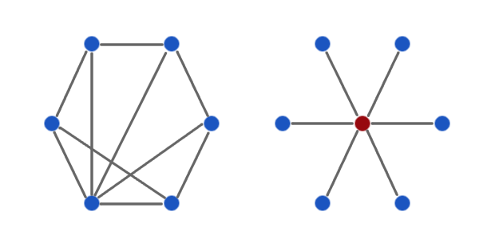

Peer to Peer ~ Concise and Simple
(As with all "concise and simple" articles I assume no prior knowledge of the subject and keep the length to less than 1500 words.)
What is the best way to organise diverse entities co-existing together in large dynamic groups? How are such arrangements created? Who is responsible for making things work?
These are important questions in political philosophy and Internet engineering and show that both subjects, at an abstract level, share much in common. From a political perspective the first question can be answered with different forms of government, the second by investigating concepts like justice, rights and law while the third question concerns the role of power and authority. From a technological perspective the first question concerns "architecture" (how computational resources fit together), the second is answered by process, requirements and design while the third question concerns capability, roles, standards and (again) authority.
This post concerns peer to peer (P2P) architecture ~ where peers of equal status (devices running appropriate software) cooperate in a loose decentralised network for mutual benefit. Peer to peer is the antithesis of hierarchy - where some have elevated status and power over others. The image below illustrates how this changes the way devices connect and communicate. The peer to peer network on the left is simply a collection of devices (in blue) with different numbers of connections between them (in grey). The right hand image is the classic client (blue) / server (red) hierarchy where many clients rely on a single server to fulfil their functionality.

Sometimes it is important to have hierarchy: it is best that a consultant surgeon is in charge of an operation rather than a well-meaning democracy of volunteers. In an ideal world, hierarchy is best when the obvious skill, knowledge and capabilities of an entity are acknowledged to bring about greater benefit for all. In an ideal world, those with elevated status and authority would have earned it via reliable and consistent public displays of such skill, knowledge and capabilities. In an ideal world, the responsibility and trust associated with status and authority would be a serious yet welcome obligation. Unfortunately, we do not live in an ideal world and hierarchy is often the cause of much that is bad and frustrating.
Some technologies, such as the web, are hierarchical and inadvertently introduce leverage points used to exploit or gain power over users. The web has a client/server architecture where information and the capabilities to change information are firmly within the realm of the server (the website). The client, using a browser, has to request the server deliver information to them and make changes for them. Unfortunately, user's data is often stored and delivered in a way that makes it hard to migrate between services. Personal data is analyzed by websites and sold via targeted advertising or (worse) handed to governments and other third parties without explicit consent. Disruption ensues when websites break: there's no way to get important documents if the server is down. The client/server model is centralisation of power and websites are single points of failure.
Contrast the web with peer to peer architecture where the loose and decentralised organisation of computing resources make it very hard for third parties to control users. This simple idea can be illustrated by two popular yet different peer to peer systems: Bittorrent (for sharing large digital assets such as audio and video files) and Bitcoin (a decentralised digital currency).
For Bittorrent, Bitcoin and many other peer to peer systems the three questions I asked at the start can be answered thus:
- The most effective way to organise a diverse and dynamic group of participants is with peer to peer architecture (this can be for both technical and political reasons).
- The means of creating such a network is via an open protocol describing the expected behaviour of participants (including checks to ensure correctness).
- It is the participant's responsibility that they correctly implement the protocol in order to make the system function correctly.
Bittorrent is an incredibly efficient way to share large files because of its peer to peer architecture. Imagine that you wanted me to copy a paper edition of War and Peace. I'd probably photocopy and give you every page in order. It's how large files are usually downloaded: linearly from server to client. Unfortunately, if I were busy or, worse still, had lost my original you wouldn't get a copy. Bittorrent works differently: it's better if I told you who else had a copy so you could ask them to provide different pieces of the original that you then collated. This is faster because your peers share the work concurrently. Furthermore, if one of the peers failed to deliver their piece you'd notice it was missing and request it from another. Therefore, there is no single point of failure. Finally, if someone else wanted a copy then you could provide pieces even if you'd not yet received the complete work. As a result peers give as well as take value from the network.
In reality, users download a "torrent" file containing details of the resource they're interested in and who to ask for it. They become a node on the bittorrent network and request pieces from the identified peers. As clients download and re-assemble the pieces of the file, others on the network request pieces in turn. Thus, it takes a relatively short time for large files to be delivered. Furthermore, popular files spread around the network and become easier to deliver since there are more peers to provide pieces.
Some websites (most famously the PirateBay) collect torrent files and provide search facilities. Other sites, called "trackers", monitor which peers have what files - although more recent versions of bittorrent allow peers to do this themselves. The video below, made by the creators of bittorrent, provides a good summary:
The superior performance, huge number of users and uncontrollable availability of pirated content has led the incumbent "creative" industry to disrupt illegal sharing through legal, economic and political means (for example, the PirateBay is censored within the UK). This is easier said than done and in no way changes the effectiveness of the Bittorrent network itself. Users quickly find other means of finding torrent files.
Bittorrent uses a peer to peer architecture because it is the best technical solution. The legal, economic and political fallout emerged later. In contrast, Bitcoin had political and economic motivations from the start and peer to peer enables such ends.
Bitcoin is a decentralised digital currency based upon an open protocol. Unlike regular currency, controlled by banks and governments, Bitcoin is designed to have no central issuing authority and instead relies on the machinations of the protocol to regulate balances, transactions and the issuing of currency. Like cash, transactions can be anonymous. Bitcoins can be subdivided into 100-million smaller units called "satoshis" and, at the time of writing, one bitcoin is worth just over £8.82.
Transactions reference Bitcoin addresses created by the potential recipient. A Bitcoin user can have many Bitcoin addresses and may even decide to use one address per transaction. They simply identify the recipient:
1HcrwtLrbe97aRBD5KCn5izumXp8N7nXcSSometimes they are displayed as QR-codes to be scanned by mobile phones:
Assuming a positive balance you can transfer bitcoins to me using the Bitcoin address above (you can't have a negative Bitcoin balance). Your Bitcoin software publishes and cryptographically signs the details of the transaction and peers check and verify the details before adding it to a set of recent transactions called a "block". Blocks are distributed around the network so balances and transfers are tracked to avoid double spending. The protocol is designed so attackers would need impossibly large amounts of time and computing power in order to subvert the chain of blocks tracking transactions.
New Bitcoins are "discovered" by peers on the network as a reward for solving the computationally hard problem that is part of the process for creating new transaction blocks. The difficulty of the problem is adjusted by the protocol to ensure that bitcoins are issued at a consistent rate. This process is called "mining" and the supply of bitcoins will never exceed 21 million. When this limit is reached miner's efforts will be rewarded with a small transaction fee. The video below explains Bitcoin from an end user's perspective:
Bitcoin is complex and many details have been hidden in my explanation. However, it is an open and audited technology and hundreds of thousands of people trust it enough to use it every day.
Concerns have been raised about tax-avoidance, anonymous payment for illegal goods and fraud via the use of Bitcoin but this also applies to traditional currencies. Ultimately, the peer to peer nature of Bitcoin is the mechanism for liberating users from the interference of banks and governments. It remains to be seen if Bitcoin will become popular and disrupt the financial system in the same way that Bittorrent has done with content delivery.
Peer to peer systems challenge the status-quo with a decentralising power shift. Furthermore, creating such technology is far easier and more effective than traditional means of political change.
The times, they are a-changin'.
:-)
1499 words. Image credits: © 2013 the author.